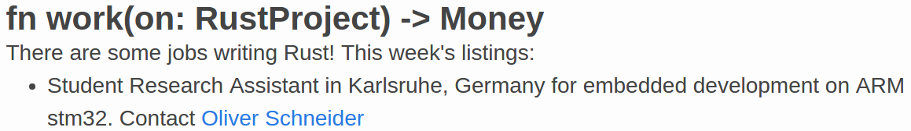

class: center, middle name: title count: false # Open Source OS Development in Rust <br>.grey[Philipp Oppermann]<br><br>.grey[May 22, 2017] --- # About Me - CS student at KIT in Karlsruhe - Specializing in Operating Systems - Learned Rust in mid 2014… ??? - 1.0 came out in May 2015 - started without libstd -- - …to write a toy OS in it ```rust #[no_mangle] pub fn main(info: *const multiboot::Information) { let info: &multiboot::Information = unsafe { &(*info) }; memory::init(info); interrupts::init(); spawn(task); loop {} } fn spawn(f: proc():Send) {…} fn task() {…} ``` ??? - `proc()` is a `move` closure today - closures were boxed - apart from that, relatively few changes --- count: false # About Me - CS student at KIT in Karlsruhe - Specializing in Operating Systems - Learned Rust in mid 2014… - …to write a toy OS in it - Since summer 2015: **Writing an OS in Rust** -- - Since Oct 2015: student research assistant - **Embedded Rust development** - First job listed on _This Week in Rust_: <div style="border: 1px solid grey; padding: 3px;">  </div> --- # Outline - About _Writing an OS in Rust_ - Open Source Development on GitHub - Example: Adding support for the `x86-interrupt` ABI - Multitasking - Principles - Case Study: OSv scheduler - Case Study: _Real Time For The Masses_ <br> .grey[Slides: https://os.phil-opp.com/talks] --- class: center, middle # About _Writing an OS in Rust_ --- # Writing an OS in Rust: Motivation - Information scattered across the internet - OSDev wiki, x86 manuals, multiboot specification, Rust docs - Some things not documented at all .grey[(or hard to find)] - Rust lang items, target specifications, multiboot 2 with ELF64, correct linker flags, ELF section alignment, etc. - Most tutorials used old technology - Only 32-bit, multiboot 1, no page tables -- ## Goals - Step-by-step guide - Provide detailed explanations --- # Writing an OS in Rust: The Beginnings - Published in Oct 2015 - Four posts: A minimal Kernel, Entering Long Mode, Set Up Rust, and Printing to Screen .center[] --- # Writing an OS in Rust: The Beginnings Received very positive feedback on [/r/rust](https://www.reddit.com/r/rust/comments/3q5a7l/get_started_on_writing_an_os_in_rust/): - “This is a **pretty great introduction** to OS dev! It's a **lot more readable** than many other tutorials I've read.” - “Thanks so much for your post. When I was toying with my own kernel a while ago, I would get stuck on things like `--gc-sections` for days. I'm really glad to see there's now **a resource on all the hoops you have to go through to boot to Rust**.“ --- # Writing an OS in Rust: The Beginnings Then some people shared it on [/r/programming](https://www.reddit.com/r/programming/comments/3q6y2l/writing_an_os_in_rust/) and [hacker news](https://news.ycombinator.com/item?id=10448136):  - Suddenly my blog had over 15,000 visitors - I was completely blown away :) --- # Writing an OS in Rust: Today - 792 stars on GitHub - Over 1000 commits .grey[(873 without merges/bots)] - Over 280 comments on the blog - and many more on reddit/hacker news - Lots of issues and pull requests -- - Even used in lectures :) - HTWG Konstanz - KTH Stockholm -- - Influenced other Rust OS projects - IntermezzOS - Redox OS .grey[(a small bit)] --- class: middle, center  # .title[intermezz]<strong>OS</strong> ## .grey[a teaching operating system] --- # IntermezzOS - Teaching OS by Steve Klabnik - .grey[Member of the Rust core team] - Inspired by _Writing an OS in Rust_ - Goal: make OS development easy for newcomers - Talk by Ashley Williams at [Rust Fest](https://www.youtube.com/watch?v=WxbrhruIAa8) & [Rust Belt Rust](https://www.youtube.com/watch?v=s3B-0ndna5c&list=PLgC1L0fKd7UmdG82JOEE0uzXci1XY61xU&index=12) - “I can operating system and so can you” --- class: middle, center  --- # Redox - By Jeremy Soller (@jackpot51) - [Interview about Redox](https://www.youtube.com/watch?v=eH5JgMlNE8o) - Microkernel design - Drivers run in userspace - Kernel is only ~8500 LoC .grey[(+ dependencies)] - Full-featured Operating System - GUI - file system - rudimentary webbrowser - Page table handling inspired by _Writing an OS in Rust_ --- # Redox .center[] --- # Writing an OS in Rust: Future Plans - Move more code into the `x86_64` crate - e.g. GDT or page table types - Write post about hardware interrupts - PIC/APIC interrupt controllers - timer interrupts - Reorder posts: Exceptions before Paging - `x86-interrupt` ABI made exception handling easier - Multitasking - Improve tooling - own boot loader? - own ISO creation tool? --- # Writing an OS in Rust: Bottom Line - Surprisingly large interest in the topic - Lots of positive feedback from the beginning on - I learned a lot about - operating systems, x86, Rust, assembly, … - writing in English - maintaining open source projects ⇒ After almost 2 years still an exciting project for me --- class: middle # You can do it too! If you have a cool idea for a project: **Write about it**! - It interests more people than you think - It doesn't need to be perfect --- class: center, middle # Open Source Development on GitHub .grey[Adding support for the `x86-interrupt` ABI] --- # Open Source Development on GitHub - Everything is public - issues, discussions, work-in-progress features, … - Everybody can propose changes - _Fork_ the repository .grey[(i.e. copy it to your own account)] - Perform the changes in your repo .grey[(in a separate branch)] - Send a _pull request_ .grey[(PR)] -- - Larger changes often require prior discussion - Rust requires RFCs .grey[(request for comments)] --- class: small-slide # RFC Example: Support for 128bit Integers - Feature Name: int128 - Start Date: 21-02-2016 - RFC PR: https://github.com/rust-lang/rfcs/pull/1504 - Rust Issue: https://github.com/rust-lang/rust/issues/35118 **Summary** This RFC adds the `i128` and `u128` primitive types to Rust. **Motivation** Some algorithms need to work with very large numbers that don't fit in 64 bits, such as certain cryptographic algorithms. One possibility would be to use a BigNum library, but these use heap allocation and tend to have high overhead. LLVM has support for very efficient 128-bit integers, which are exposed by Clang in C as the `__int128` type. **Detailed design** […] --- # Example Contribution: x86-interrupt ABI The Problem: ```nasm #[naked] unsafe extern fn exception_handler_wrapper() { asm!("push rax […] // push other registers push r11 sub rsp, 8 // align the stack pointer call exception_handler add rsp, 8 // undo stack pointer alignment pop r11 […] // pop other registers pop rax iretq " :::: "volatile", "intel"); intrinsics::unreachable(); } ``` --- # Example Contribution: x86-interrupt ABI Then I saw this PR:  --- # Example Contribution: x86-interrupt ABI - Diff very small .grey[(+38 -1)] since LLVM already supports a `msp430-interrupt` ABI -- - LLVM also supports a `x86-interrupt` ABI! - Let's try to add it! --- # x86-interrupt ABI: Forking - Fork the Rust repository  - Then you have your own copy:  --- # x86-interrupt ABI: Implementation - Implement support for the `x86-interrupt` ABI - mostly copy&paste of the msp430 PR ```rust /// LLVM CallingConv::ID. Should we wrap this? #[derive(Copy, Clone, PartialEq, Debug)] #[repr(C)] pub enum CallConv { CCallConv = 0, FastCallConv = 8, […] Msp430Intr = 69, `X86_Intr = 83`, } ``` --- # x86-interrupt ABI: Feature Gate - Add a feature gate ```rust impl<'a> PostExpansionVisitor<'a> { fn check_abi(&self, abi: Abi, span: Span) { match abi { […], `Abi::X86Interrupt => {` `gate_feature_post!(&self, abi_x86_interrupt, span,` `"x86-interrupt ABI is experimental and subject to change");` `},` // Stable Abi::Cdecl | Abi::Stdcall | Abi::Fastcall | Abi::Aapcs | Abi::Win64 | Abi::Rust | Abi::C | Abi::System => {} } } } ``` --- # x86-interrupt ABI: Testing - Build Rust - `python x.py build` - Wait a few hours .grey[(on the initial build)] - Run the test suite - `python x.py test` - Try the new compiler - There is a new `rustc` in the build dir - Tell `cargo` to use it through the `RUSTC` environment variable - e.g. `RUSTC="/home/…/rust/…/rustc" cargo build` --- # x86-interrupt ABI: Pull Request - Send a pull request to Rust's master branch  --- # x86-interrupt ABI: Continuous Integration - Each pull request is automatically tested on _Travis CI_  - For several platforms configurations - Not all configurations are tested for PRs - Don't worry if a test fails - Just push a fix to your PR branch --- # Travis Builds for Rust (1)  --- # Travis Builds for Rust (2)  --- # Travis Builds for Rust (3)  --- # Travis CI - Travis is free for open-source projects - We also use it for _Writing an OS in Rust_ ```yml # .travis.yml language: rust rust: - nightly cache: cargo addons: apt: packages: - nasm script: - make ``` --- # x86-interrupt ABI: PR Discussion  --- # x86-interrupt ABI: PR Decision  --- # x86-interrupt ABI: Merging  --- # x86-interrupt ABI: Merging - `bors` bot tests each _merge_ - Ensures that master always builds - Runs all tests on Travis - Takes several hours - Performs merge if all tests are green  --- # Rust Development on GitHub: Summary - Scales to large number of contributors - `bors` ensures that build stays green - Each change requires a review - By a member from the corresponding Rust subteam - Larger changes require an RFC - Contributions are welcome from everyone --- class: center, middle # Multitasking --- # Multitasking: Principles - Multiple threads of execution - Each thread requires its own stack - Switch between threads, so that all make progress - A _scheduler_ decides which thread runs next -- ## Preemptive Scheduling - Set up a hardware timer - Sends an _interrupt_ after specific time - CPU invokes interrupt handler .grey[(defined in the IDT)] - Calls _dispatcher_ to perform thread switch - Calls scheduler to select next thread --- # Multitasking: Hardware Interrupts Two interrupt controllers on x86: - 8259 Programmable Interrupt Controller (PIC) - since 1976.grey[, but still present on modern CPUs] - limited number of IRQs - no multi-processor support - Advanced Programmable Interrupt Controller (APIC) - since ~1990 - separation: local APIC and I/O APIC - supports inter-processor interrupts (IPIs) - supports IRQ priorities - built-in timer --- # 8259 Programmable Interrupt Controller (PIC) Structure: .center[] --- # PIC Initialization Save and restore interrupt masks: ```nasm in al, 0x21 ; save pic1 mask mov cl, al in al, 0xA1 ; save pic2 mask mov ch, al […] ; initialization mov al, cl out 0x21, al ; restore pic1 mask mov al, ch out 0xA1, al ; restore pic2 mask ``` --- # PIC Initialization ```nasm mov al, 0x11 out 0x20, al ; `send initialize command` to pic1 out 0xA0, al ; send initialize command to pic2 mov al, 0x20 out 0x21, al ; `set vector offset` of pic1 to 0x20 mov al, 0x28 out 0xA1, al ; set vector offset of pic2 to 0x28 mov al, 4 out 0x21, al ; tell pic1 that there is a slave PIC at IRQ2 (0000 0100) mov al, 2 out 0xA1, al ; tell pic2 its cascade identity (0000 0010) mov al, 0x1 out 0x21, al ; 8086 mode for pic1 out 0xA1, al ; 8086 mode for pic2 ``` --- # PIC Usage - Enable interrupts through the `sti` instruction - Now there should be regular timer interrupts - With interrupt vector `0x20` .grey[(pic1 vector offset + 0)] - Interrupts must be acknowledged - By sending an _end of interrupt_ (EOI) signal to master pic - If interrupt from slave: Also send EOI to slave pic ```nasm mov al, 0x20 ; EOI code out 0x20, al ; send EOI to master out 0xa0, al ; send EOI to slave ``` --- # PIC: Timer Configuration To set an interval of 10ms (100Hz): ```nasm mov rcx, 1193180/100 ; divisor (100 Hz) mov al, 0x36 out 0x43, al ; set channel 0 data register + mode bits mov al, cl out 0x40, al ; set low divisor byte mov al, ch out 0x40, al ; set high divisor byte ``` --- # PIC: Summary - Simple way to get timer interrupts - Fixed interval - Also: keyboard interrupts - For more details see [randomhacks.net](http://www.randomhacks.net/2015/11/16/bare-metal-rust-configure-your-pic-interrupts/) and [osdev.org](http://wiki.osdev.org/8259_PIC) - `pic8259_simple` crate available on crates.io --- # Advanced Programmable Interrupt Controller .center[] .grey[(from the [.grey[AMD64 manual]](http://developer.amd.com/wordpress/media/2012/10/24593_APM_v21.pdf))] --- # APIC Configuration - Memory-mapped configuration registers - Enable by setting the _spurious interrupt vector register_ - Mask all interrupts in the legacy PIC - Also remap the PIC IRQs - Spurious interrupts are still possible - Without remapping, they are interpreted as exceptions --- # Multitasking: Principles .grey[- Multiple threads of execution - Each thread requires its own stack - Switch between threads, so that all make progress - A _scheduler_ decides which thread runs next] ## Preemptive Scheduling .grey[- Set up a hardware timer - Sends an _interrupt_ after specific time] - CPU invokes interrupt handler .grey[(defined in the IDT)] - Calls _dispatcher_ to perform thread switch - Calls scheduler to select next thread --- # Multitasking: Dispatching - Save all general purpose registers on the stack - (Save SSE/floating point state) - Save stack pointer value in a thread control block - Required to continue thread -- - Call scheduler to select next thread - Load stack pointer from next thread's TCB - Must be done in assembly -- - Restore register state from stack - For userspace threads: Switch address space - Continue execution --- # Dispatching Example: Timer Interrupt Handler ```rust extern "x86-interrupt" fn timer_handler(f: &ExceptionStackFrame) { unsafe { asm!("mov rdi, rsp call schedule mov rsp, rax" ::: "rax, rbx, rcx, rdx, rbp, rsi, rdi, r8, …, r15" : "intel"); } } fn schedule(sp: usize) -> usize { SCHEDULER.lock().schedule(sp) } ``` --- # Dispatching Example: Timer Interrupt Handler ```rust struct Scheduler { threads: VecDeque<usize>, } impl Scheduler { fn schedule(&mut self, sp: usize) -> usize { self.threads.push_back(sp); self.threads.pop_front().unwrap() } fn create_thread(&mut self, sp: usize, ip: usize) { […] // construct interrupt stack frame on stack self.threads.push_back(sp_new); } } ``` --- # Multitasking: Scheduler Design - Cheap to compute - Ensure fairness .grey[of some kind] - e.g. equalize run-time in recent history - Scalable - Priorities? - Avoid priority inversion! - Multi-processor support? - Real-Time guarantees? --- # Multitasking: Simple Scheduler Designs - Round-Robin - `Vec` of threads - Simplest case: `Vec` of stack pointers - Priority queue using `BinaryHeap`? - Fixed time-slice lengths - Pre-allocated memory for real-time guarantees --- class: center <br>  --- # Case Study: The OSv Scheduler - Tick-less - No periodic timer interrupts - Use high resolution clock instead - Set a timer for the next thread switch time - Fairness: exponentially-decaying moving average - Completely lock-free <br><br>.grey[(see [.grey[the paper]](https://www.usenix.org/system/files/conference/atc14/atc14-paper-kivity.pdf) for more details)] --- # The OSv Scheduler: Lock-Freedom - No mutexes, no spinlocks - Separate run-queue per CPU - Load balancer for migration between CPUs - `N` lock-free SPSC queues of incoming threads per CPU - `N^2` SPSC queues in total - Inter-processor interrupt for notification of new content - Optimization: Bitmap of non-empty queues per CPU .grey[(`N` = number of CPUs)<br> (SPSC = “single producer, single consumer”)] --- # Case Study: Real Time For the Masses - Idea: Each task belongs to an interrupt - Scheduling is done by interrupt controller - Invokes interrupt handlers highest-priority first - Preempts low-priority tasks on higher priority IRQs - Same-priority tasks can't preempt each other - Task have _run to completion_ semantics - Endless loops cause starvation of lower-priority tasks More info: http://blog.japaric.io/fearless-concurrency/ --- # RTFM Example ```rust tasks!(stm32f30x, { periodic: Task { interrupt: Tim7, priority: P1, enabled: true, }, }); fn periodic(mut task: Tim7, ref priority: P1, ref threshold: T1) { // Task local data static STATE: Local<bool, Tim7> = Local::new(false); let state = STATE.borrow_mut(&mut task); *state = !*state; if *state { LEDS[0].on(); } else { LEDS[0].off(); } } ``` --- # Multitasking: Summary - Dispatcher saves/restores thread state .grey[(on stack)] - Scheduler chooses next thread - Tradeoff: good decision <-> fast decision - Preemption through hardware timer - PIC and Programmable Interval Timer (PIT) - APIC with integrated timer Scheduler design ideas: - OSv: lock-free scheduling - RTFM: real-time scheduling with priorities - Interrupt controller is scheduler